Even Mo' Pixels
To keep the habbit alive, I continue to do a daily pixel routine, now covering almost all of the GNOME Circle apps.
Good call. Empty alt attributes (alt="") are actually better for decorative images or icons since they tell screen readers to skip over them, rather than announcing "x" over and over again.
Here is the updated block:
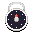
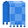
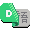
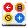
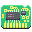
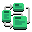
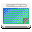
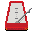
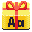
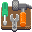
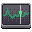
I've been practicing the art of animation a little too in an effort to promote GNOME Circle on Twitter and Mastodon. Presenting all these GIFs would probably not be kind to Planet GNOME readers though. Perhaps I could compose a video in the future (no GIF support in Blender, strangely!). Keep grinding your (pointless) skills, kids!